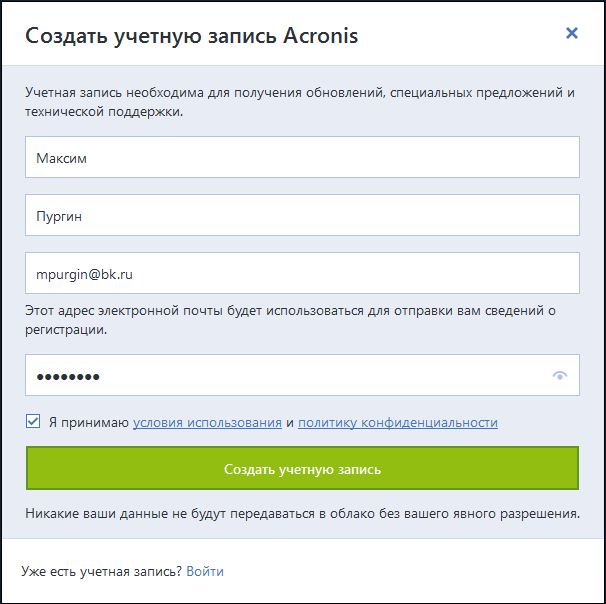
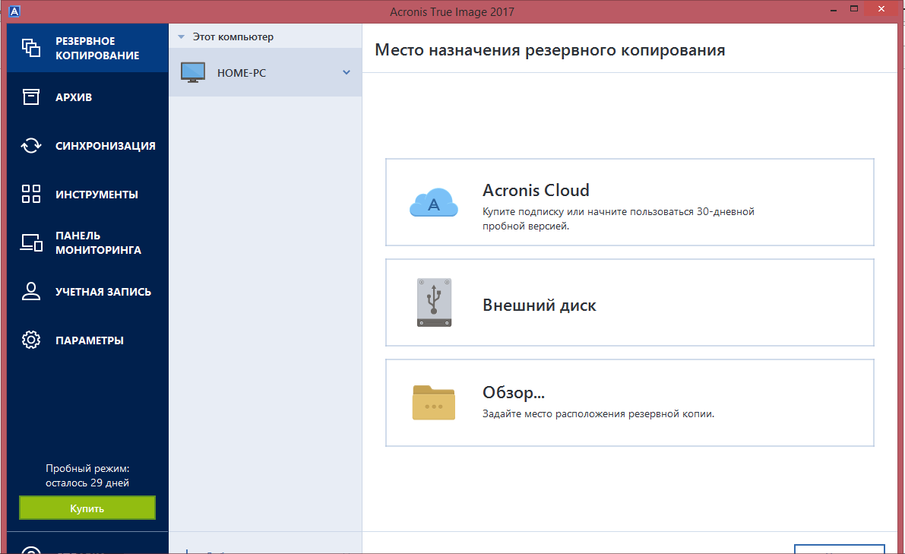
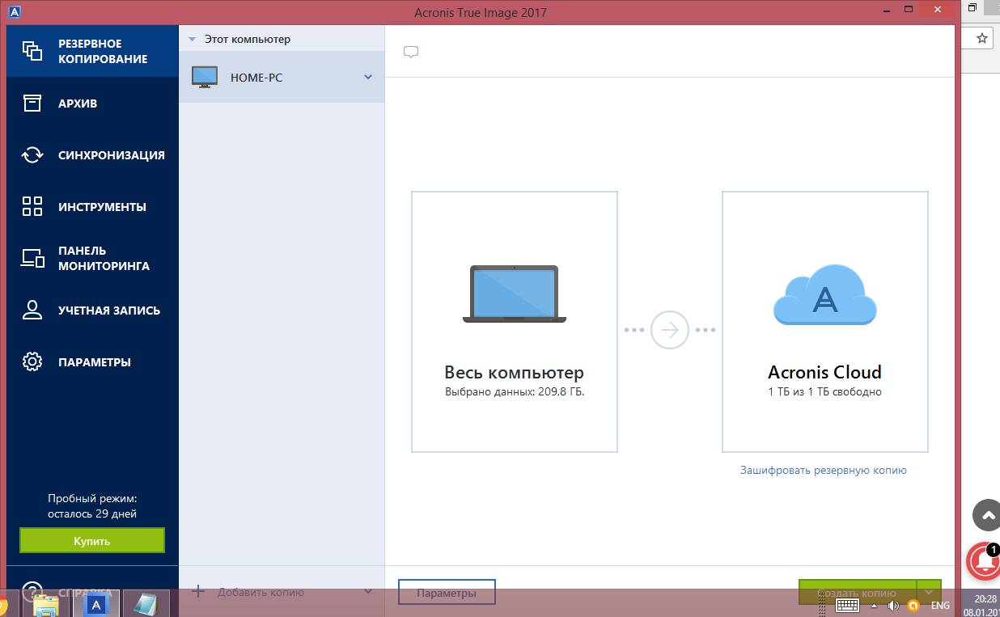
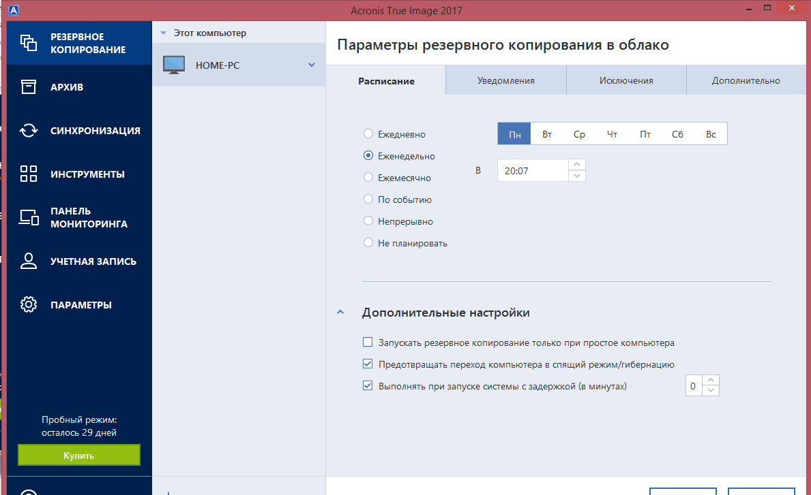
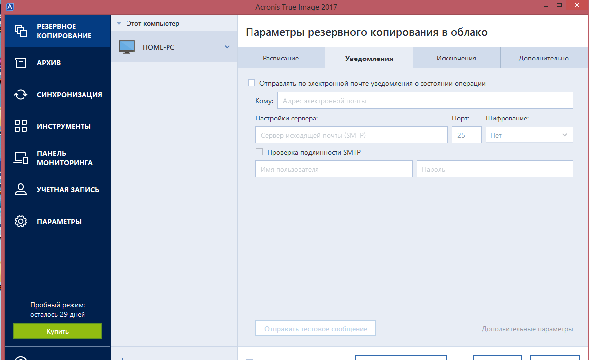
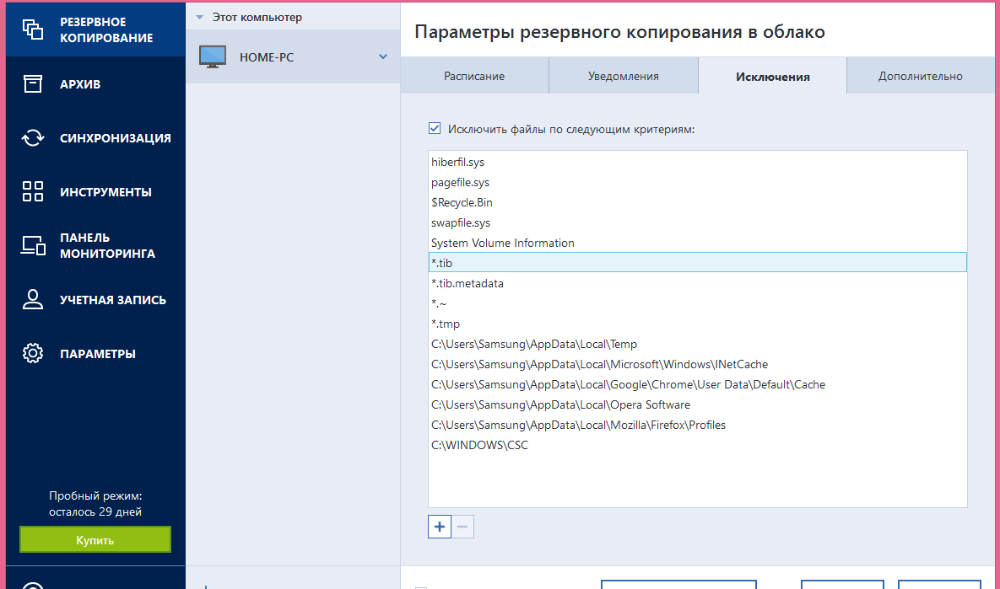
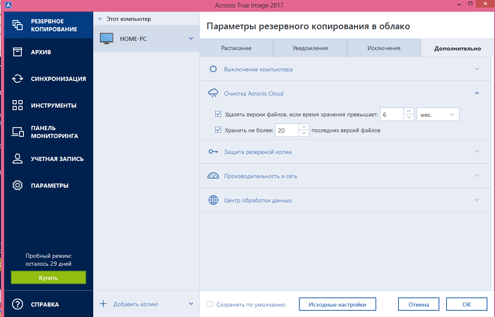
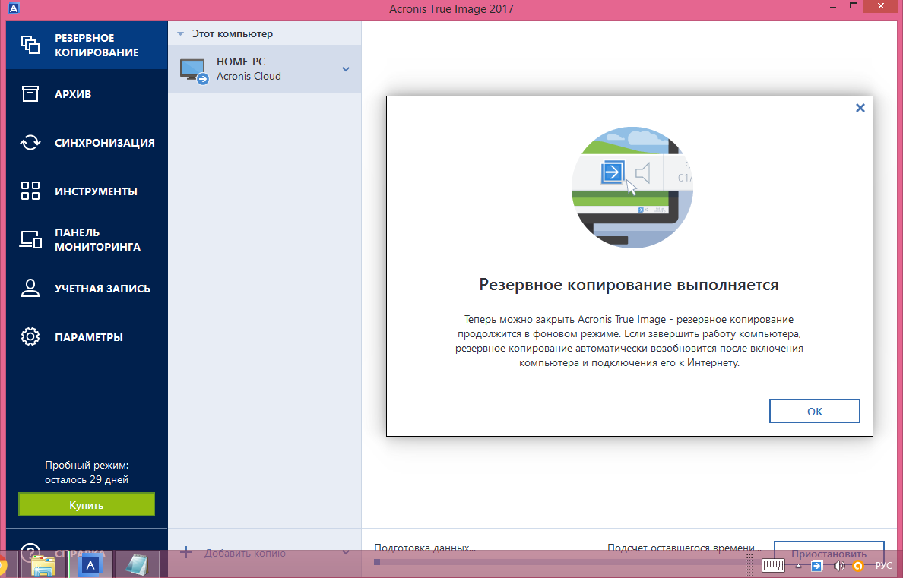

Acronis True Image 2017
Компания Acronis является мировым лидером в области решений резервного копирования. Когда организация впервые представила возможность хранения резервных копий в облачном пространстве, производительность данной технологии оставляла желать лучшего. Теперь, когда трудности внедрения нового решения оказались позади, компания представила Acronis True Image 2017 New Generation - инновационный продукт для выполнения локального и облачного резервного копирования, который заслуживает вашего внимания. Программа позволяет отправлять в облачное хранилище не только отдельные пользовательские файлы, но целые образы жестких дисков. New Generation - новейшие дополнение к линейке продуктов Acronis, которое предлагает уникальные функции, включая передовую защиту от троянов-шифровальщиков, цифровую подпись и проверку с использованием технологии blockchain.
Практическое применение программы
Для ознакомления с возможностями программы можно воспользоваться 30-дневной пробной версией.
Установочный файл New Generation имеет размер около 500 MB, а инсталляция самой программы занимает несколько минут. После установки программного обеспечения нужно принять лицензионное соглашение (освобождающее Acronis от ответственности за потерю данных) и войти в свою учетную запись или создать новый аккаунт. Пользователю нужно ввести имя, адрес электронной почты и пароль. Платежные реквизиты при этом указывать не нужно. После входа в аккаунт нужно его активировать, выбрав бесплатную пробную версию или указав серийный номер.

 В первую очередь вы можете выбрать объект резервного копирования - целый жесткий диск или отдельные файл. Если вы хотите выбрать отдельную папку, то процесс выбора может показаться не слишком очевидным. Обязательно нужно отметить галочку рядом с именем файла, в противном случае программа будет отображать приблизительный размер резервной копии, равный нулю.
Затем нужно выбрать расположение для резервной копии. Самый очевидный выбор - Acronis Cloud, но вы можете также использовать внешний жесткий диск или папку на компьютере.
 Как можно увидеть копия создается фактически в два клика, но я рассмотрю дополнительный парметры и условия, которые помогут создать копию по моим правилам.
 Простая установка времени создания копии, по минутам дням, при включении компьютера и при его отключении. Все можно проставить до мелочей.
 Так же можно настроить получение уведомлений. После создания будет прислыаться отчет о состоянии операции.
 Конечно, можно и исключить некотрые файлы из операции копирования, но если копировать систему то всю, полезно, но необязательно, на мой взгляд.
 Так же можно удалить все версии файлов с заданым временем хранения. Можно установить пароль на копию(что не мало важно). Можно поставить приоритет операции( от низкого до высокого), установить или ограничить скорость сетевого подключения.
 Таким образом программа создает виртуальную резервную копию в фоновом режиме, но при наличии подключения к интернету.
Достоинства
простой и понятный интерфейс
быстрая загрузка
локальное и облачное резервное копирование
синхронизация файлов
до 5 терабайт облачного пространства
проверка данных с помощью технологии цепочки блоков blockchain
защита от шифровальщиков
Недостатки
дороже многих конкурентов
регулярное облачное резервное копирование недоступно
отсутствует возможность загрузки через вебинтерфейс
отсутствует защита общих файлов паролем
Общая оценка
Acronis True Image 2017 New Generation позволяет сохранять полную копию вашего жесткого диска в облачное пространство и предлагает уникальные технологии безопасности, но все же лишен некоторых расширенных возможностей, которые присутствуют в сервисах облачного резервного копирования.